USER-GUIDE.md for easy reading — the Markdown file is the source of truth (don't edit this HTML; run npm run docs:html). READMEHow to run the property day-to-day from your phone or computer. No technical knowledge needed.
This app is your single place to manage bookings, the calendar, guests, housekeeping, pricing, money, your team, your facilities, and even a network of trusted nearby properties. It works on a phone (it can be installed like an app) and on a computer. This guide walks through everything you'll do, screen by screen.
A short version of this guide is built into the app — open More → Help on your phone, or the Help item in the sidebar on a computer.
Open the app's web address and sign in with your email and password. Staying logged in keeps you signed in for about a month.
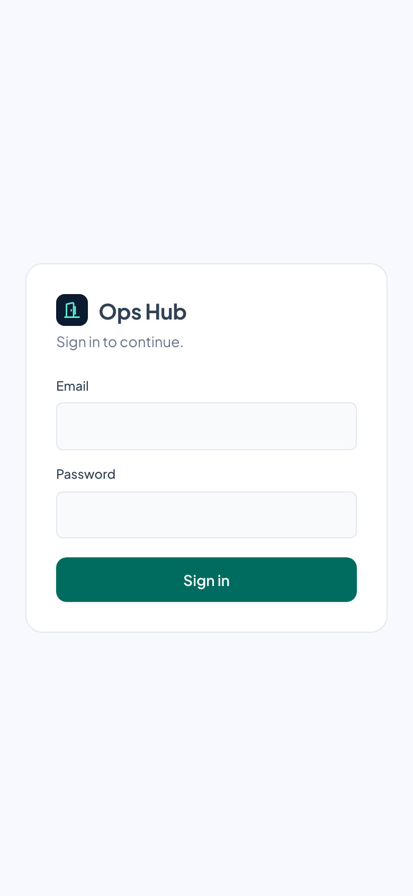
Each login has a role, set by the owner in Settings → Users & roles:
More than one property? Owners who run several can switch between them from the property switcher at the top of the nav (it appears once you have 2+). Everything on screen then refers to the chosen property. Add a property in Settings → Properties.
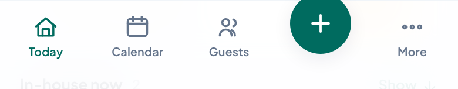
The phone menu's big + in the middle = new booking. More opens everything else (Finance, Pricing, Inbox, Settings, Help…).
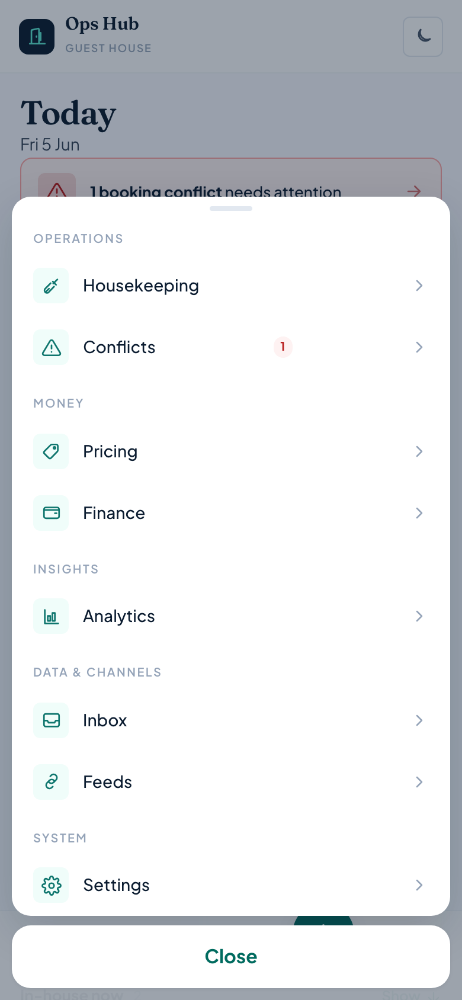
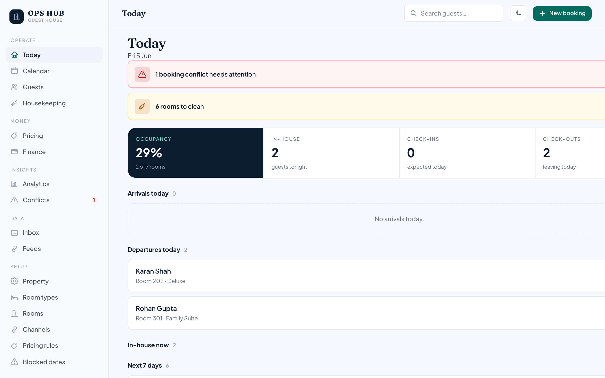
Tap the moon/sun icon to switch dark / light mode. Open Preferences (the gear, or More → Preferences) to change the accent colour and display density (comfortable / compact). Your choices are remembered on that device.
Install it like an app: on a phone, use your browser's "Add to Home Screen". It then opens full-screen with its own icon, just like a native app.
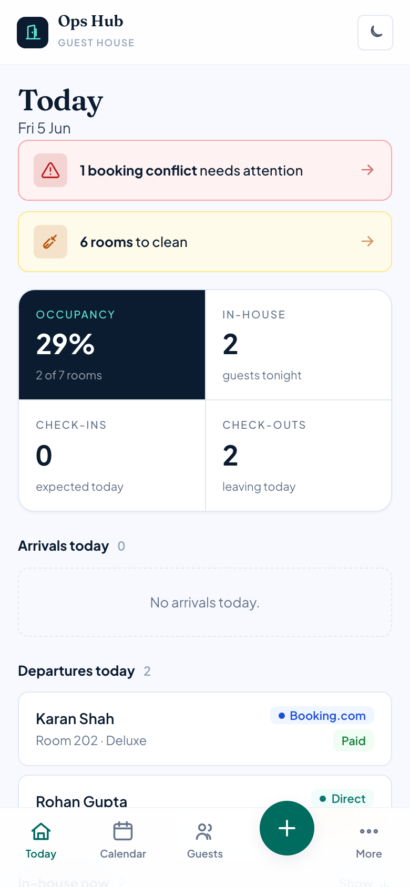
Your morning glance. It shows:
Tap any guest row to open that booking.
Your day, start to finish:
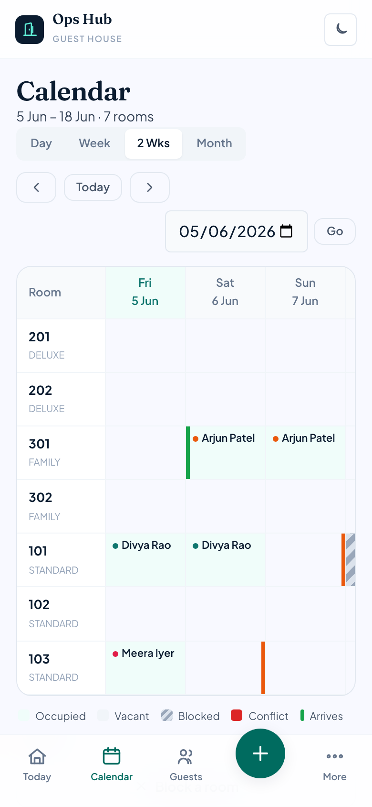
A grid of your rooms (rows) across dates (columns). Each stay draws as a continuous bar showing the guest and channel; empty nights are tap-to-book. Each cell is colour-coded:
| Colour | Meaning |
|---|---|
| Vacant | Room is free that night. |
| Occupied | A guest is staying — shows their name and the booking channel. Tap to open it. |
| Blocked | Held out of service (maintenance, repairs, owner use). |
| Conflict | A clash that needs fixing (e.g. a booking overlapping a block). Shown in red. |
| Arriving | A green edge marks the arrival day. |
| Departing | A clay edge marks the check-out day. |
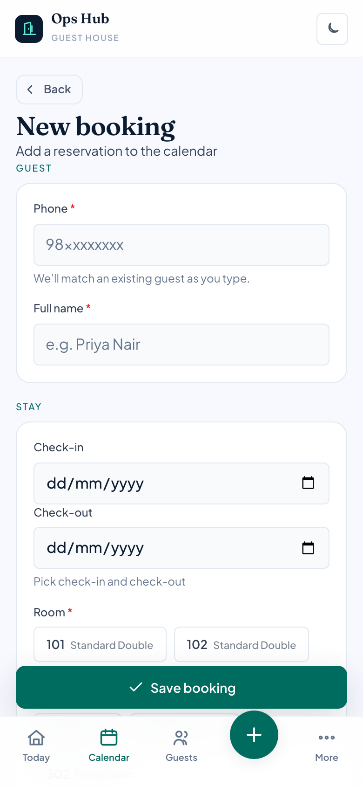
Tap New (or New booking). Fill in:
Double-booking is impossible. If those dates for that room are already taken, the app refuses to save and tells you clearly — your calendar can never end up double-booked.
If the guest is blacklisted, a warning shows with the reason. You can still proceed — it's just a heads-up.
Scam-number check. As you type the phone, the app checks it against your scam / flagged-numbers list (Settings → Scam numbers). If it's a known-bad number, an amber warning appears so you can verify before taking the booking or any payment.
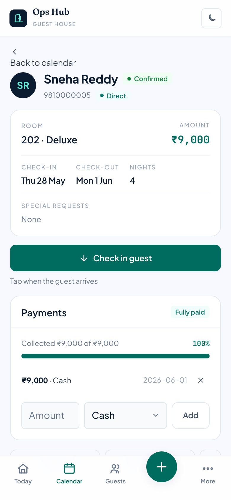
Tap any booking (from the calendar, Today, or a guest) to open it. You'll see the room, channel, dates, nights, amount and special requests. If the booking came through a travel agent, the agent and their commission rate show next to the channel.
The stay card moves through three steps:
ID is required to check in. By default the Check in button is disabled until the guest's government ID is recorded (an ID number, a scanned document, or the "verified" tick) — and for foreign guests, until the C-Form (passport) is filled. A note explains what's missing with a Record ID link to the guest. The owner can change this to warn only or off in Settings → Property.
Made a mistake? Undo steps back one stage.
Edit changes the booking; Invoice opens a printable bill (see next section); Cancel reservation cancels it and frees the dates for re-booking. Once cancelled, the booking shows the refund the cancellation policy allows (see Settings → Cancellation).
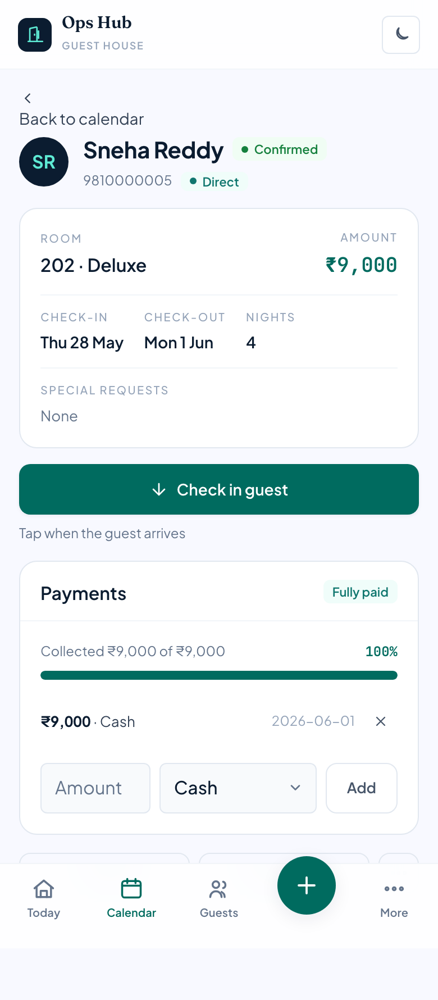
On a booking, the payments panel shows what's been collected and the balance due. Add payment to record an amount and how it was paid (cash, UPI, card, bank, or collected by the OTA). Add several over time — a deposit now, the balance at check-in.
If you've set your UPI ID (Settings → Property), each unpaid booking shows a Request ₹X via UPI link and a Show QR button. Tap Show QR to display a scannable code the guest pays with any UPI app, or send the link — it's the balance, pre-filled. No gateway or account needed.
If a booking expects an advance, the panel shows an advance status — "Advance pending" until enough advance-tagged payments are in, then "Advance received". When you add a payment while an advance is owed, tick Mark as advance deposit so it counts toward it.
When you choose UPI or bank transfer, a short verification checklist appears (confirm the sender name, that the money actually landed, and the reference). Enter the UTR / reference number and tick each item — the Add payment button stays disabled until all are checked. This guards against fake-payment scams.
On a booking, tap Invoice for a clean bill with your property's name/address, the stay, charges, payments and balance. Tap Print / Save PDF and choose "Save as PDF" in the print dialog.
The property name, address and GST number on the invoice come from Settings → Property — fill those in once.
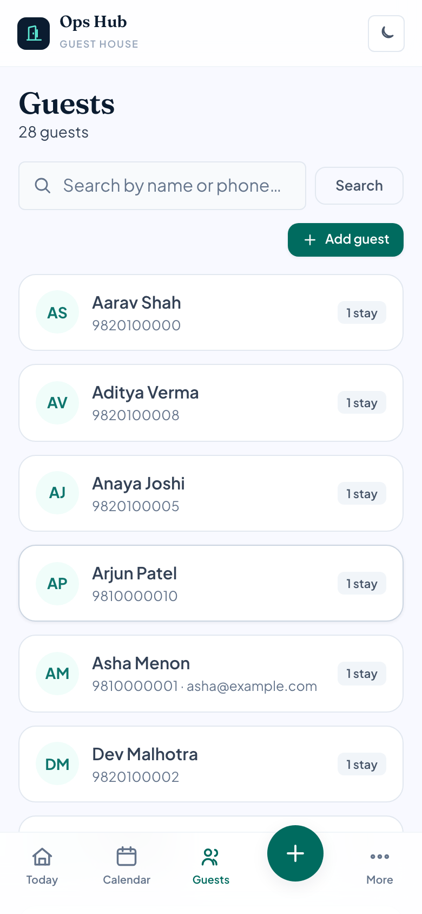
Search by name or phone. Each guest shows their number of stays, and badges for Repeat guests and Blocked (blacklisted) ones. Guests are shared across all your properties, so a returning guest is recognised wherever they book.
Open a guest to see:
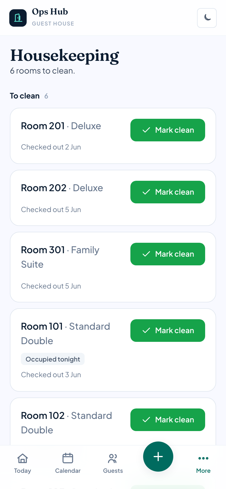
Two lists:
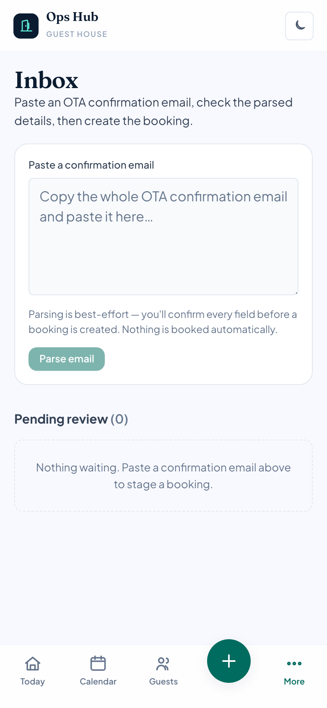
For bookings that arrive by email from Booking.com / Agoda / MakeMyTrip:
Nothing is ever booked automatically — you always confirm. (Your tech team can later set this up to receive emails automatically; the review step stays the same.)
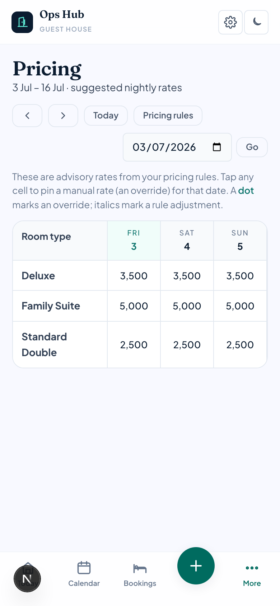
The Pricing screen shows a calendar of suggested nightly rates per room type. These are advisory — they help you decide and pre-fill new bookings; they are not sent to the OTAs.
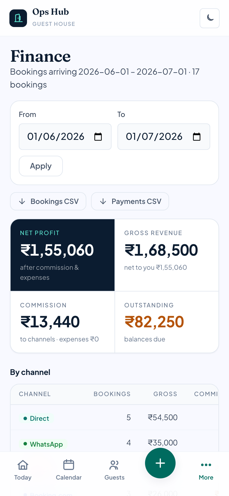
Pick a date range at the top. You'll see four tiles: Net to you (what's actually left, after commission and expenses), Gross revenue, Commission, and Outstanding (balances still owed).
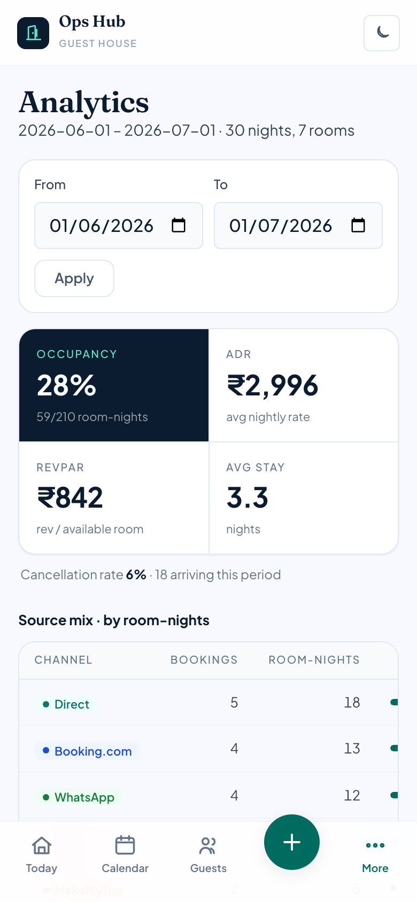
Performance over a period: occupancy, ADR (average nightly rate), RevPAR (revenue per available room), and your channel mix — useful for spotting trends and your best sources.
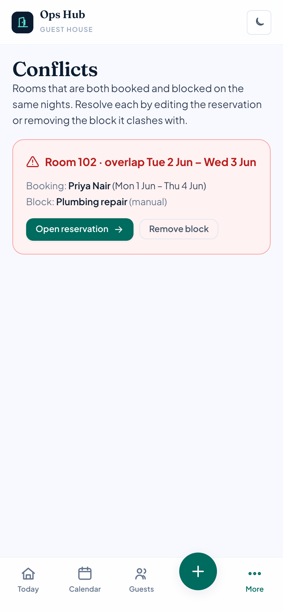
Lists any clashes that need a human decision — typically a manual block overlapping a stay. (Two confirmed bookings can never overlap; the app blocks that at the source.) Clear the list by removing the block or adjusting the booking.
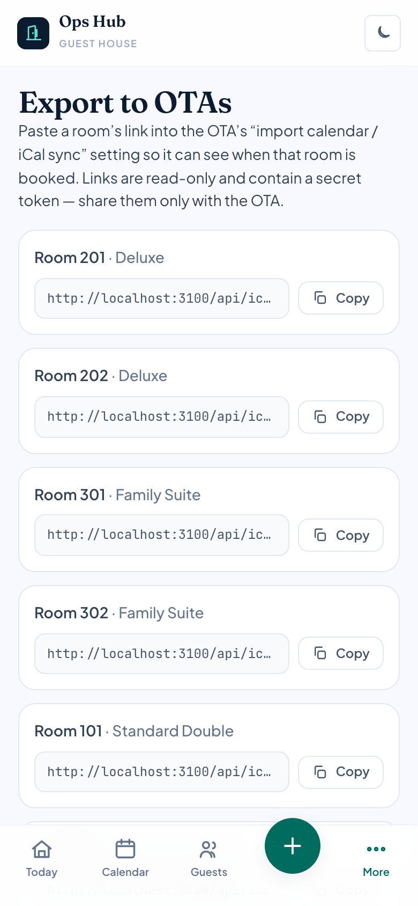
The Feeds screen keeps your calendars in sync with OTAs using free iCal links — no special accounts needed:
.ics link you can give an OTA so they see your busy dates.For the bigger picture of why this matters, see Channels, OTAs & double-booking.
The Bookings tab is a single searchable list of every booking — handy when you want to find one without hunting on the calendar.
Manage the agents who bring you bookings on a B2B rate in Settings → Travel agents:
Attribute a booking to an agent on the booking form (the Travel agent picker). An agent is different from a channel (where a booking came from) and from a referral (a guest you send out to a peer — see Community): an agent brings guests in and is a cost of sale.
These two screens light up once your tech team connects the AI assistant. Until then they simply sit empty — nothing to do.
When an AI assistant hits something it shouldn't decide on its own — a special meal request, a complaint, a cab with no driver, or any action needing your approval (like cancelling a booking) — it files an escalation here instead of acting. The Escalations screen is your to-do queue:
The Messages screen is an outbox — a log of every message the assistant or system has sent (or queued) to guests, with the channel (WhatsApp / SMS / email), who it went to, and the text.
The app already drafts guest messages automatically: a booking confirmation when a booking is made, a pre-arrival note the day before check-in, and payment reminders for balances still due. Today these are logged here for your records. Once your tech team connects a WhatsApp/messaging provider, the same drafts send for real — with no change to how you work — and this screen shows their delivery status.
The Staff screen (in More, or the sidebar) is your team in one place:
Cleaning can be assigned to a staff member (with a checklist) from the Housekeeping screen, so you know who did what.
Grouped under Facilities in the menu. Every list here has an Edit button on each row and a delete.
Track supplies: add items with a unit and a low-stock level. Use In / Out to change the quantity; anything at or below its level is flagged "Low" and listed in a banner.
Offer sightseeing and treks: keep partners/guides (with a commission %), list the tours you offer, and book a tour for a guest. A summary totals bookings, revenue and the commission owed.
Keep a record of drivers and trips (pickup, drop-off, fare, status). (Live cab dispatch is handled by the separate assistant service, not here.)
The Complaints screen logs guest issues: record a complaint with a category and priority, assign it, and move it through to resolved with a follow-up. Filter by status to see what's still open.
The Reviews screen tracks review requests and their status, and lets you draft a response.
The Groups screen links several room bookings into one folio — for a group, a whole-property booking, or a long stay. Each room is still booked the normal way (and conflict-checked), then attached to the group so you can see and bill them together.
Everything here is opt-in. Nothing about your property is shared with anyone until you connect with them and choose exactly what to share. Your guests' private details and your finances are never shared.
A network of trusted nearby properties so you can help each other. Set it up in Settings → Trusted network:
Everything you set up once and rarely change:
| Section | What you manage |
|---|---|
| Properties | Add a property, or switch between the ones you run (owners with several guest houses). |
| Property | Name, address, GST number, check-in/out times, currency, your UPI ID for pay-links/QR, and the ID rules (how strictly ID is required at check-in — block / warn / off, whether an ID number is required to take a booking, and how long to keep scanned IDs before they auto-delete). |
| Users & roles | Add logins for your team and set each one's role — owner, reception or housekeeping. "Money only for owners." Owners with several properties can grant each login access per property. |
| Room types | Categories (Standard, Deluxe…) with base rate, max occupancy, and the rate floor/ceiling. |
| Rooms | Add a room, or Archive one to retire it (leaves the calendar, keeps history). Delete is only allowed for a room that was never booked. |
| Amenities | The facilities your property offers, used by the community directory. |
| Channels | Booking sources and their commission %. |
| Travel agents | Your verified B2B agents, their commission rate, and what you owe them (see Travel agents). |
| iCal feeds | Import/export busy dates with OTAs (see Channel feeds). |
| Pricing rules | Turn the engine on/off; weekend days & uplift; early-bird / last-minute; busy-period pricing; and a Seasons & holidays list of date ranges with adjustments. |
| Cancellation & refunds | Your refund ladder — how much a guest gets back by how far ahead they cancel (e.g. 100% at 30+ days, 75% at 20–29, 50% at 7–19, nothing inside a week). The refund is worked out for you on a cancelled booking; you can still approve a different amount. |
| Maintenance blocks | Block a room for a date range with a comment. Blocked dates can't be booked and show on the calendar. |
| Scam numbers | A list of known-bad phone numbers (with a reason). When one turns up on a new booking, the form warns you. |
| Community scam list / Bad-guest alerts | Report and verify shared scam numbers and evidence-backed bad-guest alerts. |
| Trusted network | Your connect code, invites, and per-peer sharing switches (see Community network). |
| Import data | Bring past guests & bookings over from a CSV; each row is created like a normal, conflict-checked booking. |
| Audit log | A record of sensitive actions (cancellations, refunds, blacklisting, user & consent changes) — who did what, and when. |
This section explains why the sync tools exist — useful for the owner and front desk. (For how to set the feeds up, see Channel feeds.)
The core problem. Each place you take bookings — your own website/WhatsApp, Booking.com, Agoda — keeps its own count of what's free. When someone books on your website, Booking.com's count doesn't change — it never saw that booking. So an OTA's picture is only correct if something keeps pushing your latest availability to it.
How a double-booking happens: 1 room left → a guest books it on your website (you now show 0, but nothing told Booking.com) → Booking.com still shows 1 → a second guest books it there → two guests, one room.
The three ways to keep channels in sync:
| Method | Real-time? | Prevents oversell? | Cost | Available to a single property? |
|---|---|---|---|---|
| Manual extranet updates | No — by hand | Only if you update instantly | Free | Yes |
| iCal calendar sync | No — every few hours | Partly — a lag window remains | Free | Sometimes (depends on listing type) |
| Channel manager | Yes — within seconds | Yes | Paid (monthly) | Yes — via the channel manager |
Why can't we just connect to Booking.com's API ourselves? The official real-time connectivity APIs are granted only to certified channel-manager partners, not to individual properties. The channel manager is the licensed middleman.
What iCal can and can't do. iCal is a free, one-way "busy dates" feed (a .ics file at a URL) set up per room in the OTA extranet. You publish your room's link into their extranet (so they block your busy dates) and paste their link into the Feeds screen (so their bookings show as blocks here). Its limits: it's not real-time (refreshed every few hours, so a small double-booking window remains), it's binary busy/free for a single unit (it can't say "2 of my 3 Deluxe rooms are taken"), and it only syncs availability — not rates or guest details. Traditional multi-room hotel listings often don't get the iCal option at all — for those, an OTA expects a certified channel manager instead.
Where this app fits. It's deliberately not a channel manager (a single property can't be one). What it does give you: it's internally bulletproof (the database makes it impossible to double-book a room it knows about), it brings OTA bookings in (via the Inbox email paste and iCal import), and it's your single source of truth — every booking, direct or OTA, in one place. The honest limit: the free tools (iCal + email) aren't real-time, so a small residual window remains between your website and an OTA. Closing it completely needs a paid channel manager, which this app is designed to sit alongside.
What to do: make this app the single source of truth; check your OTA extranet for the iCal option and set up two-way sync if it's there; keep a safety buffer during busy periods (don't sell the very last room on OTAs); and if volume grows and double-bookings start costing money, pair one affordable channel manager.
For setup, deployment and the technical reference, developers should see README.md and the docs/ folder. This guide covers day-to-day use only.